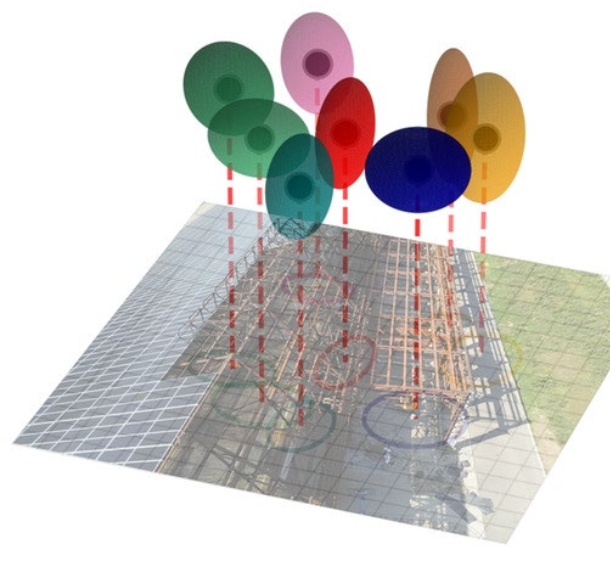
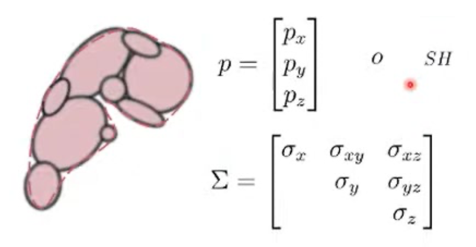
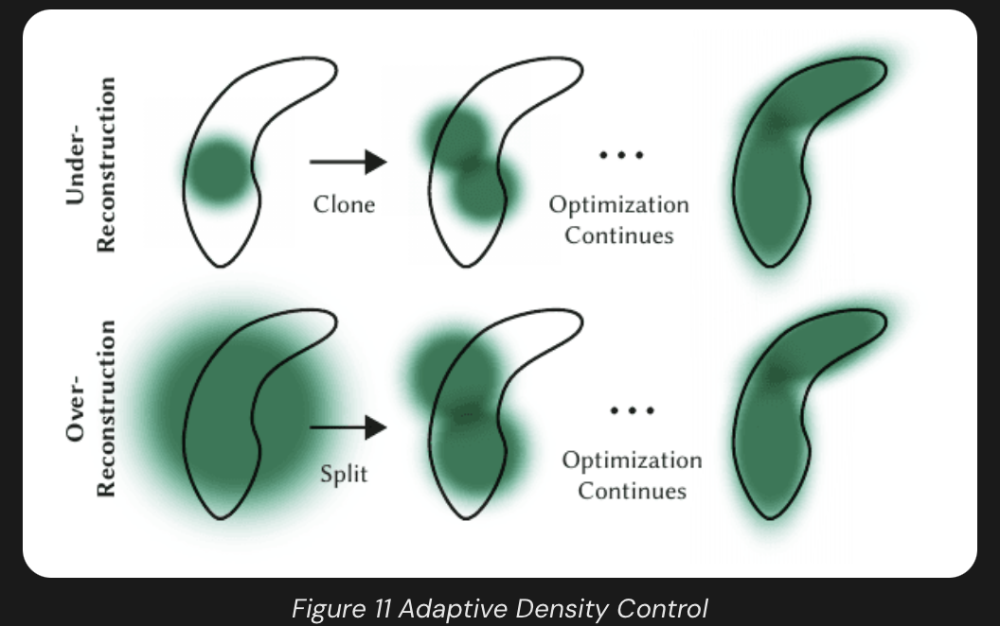
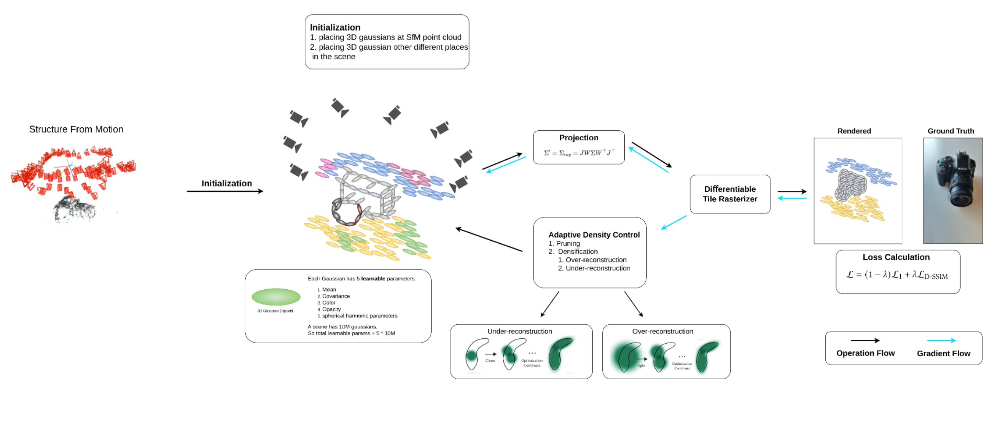
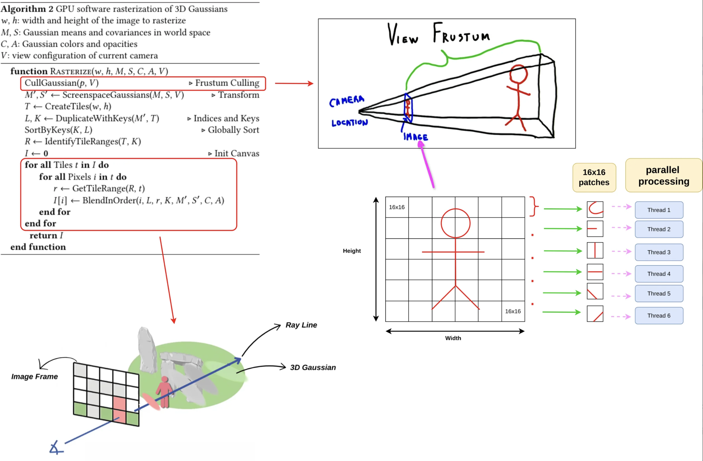
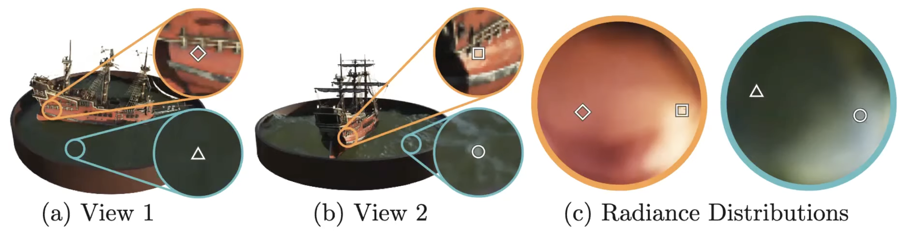
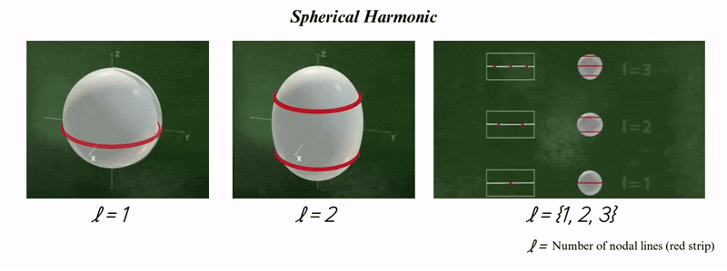

Resource endorsed by the professor: learnopencv. Notes and slides from UTwente.
Massively used in many application nowadays. It’s taking ground from NeRF.
NeRF is heavy computationally. It’s mainly why it lost ground. It was using the volumetric ray marching: sample iteratively in my volume (the colors) and take the sum to estimate the volume. The method’s computational cost made it impractical for large-scale or interactive applications.
Gaussian Splatting achieves groundbreaking results without relying on any neural networks, not even a small MLP!
I mean, how cool is this?
3DGS is a rasterization method that enables real-time rendering of photorealistic scenes learned from a limited set of images. The scene is represented by millions of Gaussians.
So what's new?
- Fast rendering using GPU and avoiding ray-marching.
- PRO: Gaussians are differentiable ⇒ you can include them in stochastic infrastructures since they are defined by a 3D covariance matrix and centered at a point(mean).
- Can be parallelized — use of GPU
Limitations of previous methods
- The meshes (triangle representing the surface), are not able to reproduce complicated geometries and thin details (hair, vegetation, etc.)
- Meshes are not efficient when you have billions of points representing a surface (let’s say a building) i.e. time consuming.

- 3DGS is a simple yet nice idea: the scene (3D world) can be represented by big collections of 3D Gaussians (ellipsoids), and they are overlayed one over another and create shapes.
- Imagine having a 3D volume filled with millions of tiny 3D Gaussian blobs (sort of point clouds) floating in space.
To guarantee that the 3 axes are all positive, Gaussians are represented as 3D ellipsoids in the optimization process. We assume the 3 axes are always positive because we need real space.
Each Gaussian has 5 learnable parameters:
- Mean
- Covariance
- Color (changes in terms of the direction I’m looking at)
- Opacity
- Spherical Harmonic Parameters
If a scene has 10M gaussian ⇒ 50M parameters. When you have a homogenous surface (a wall), you only need 1 Gaussian to represent it with small amounts of parameters.
Splat oriented points representing a surface on the screen.
Important properties of Splatting
- Points become bigger as the camera approaches, avoiding holes in objects
- Slanted normal appears as ellipses, so we can create better edges
- Each sample can be processed independently (massive GPU parallelism)
Workflow
Initialization:
As in NeRF, the input of 3DGS is a set of images of a static scene, together with the corresponding cameras calibrated by Structure from Motion (SfM) which produces a sparse point cloud. This sparse point cloud is used to initialize the 3D Gaussian process, considering each point as the centre of a 3D Gaussian. This gives the first input for the following steps.
Gaussian Generation:
From these points, a set of 3D Gaussians is created. Each Gaussian is defined by a (1) position (mean), (2) covariance matrix and (3) opacity , which allows a very flexible optimization regime. This results in a reasonably compact representation of the 3D scene

Pruning: remove Gaussians in the areas where they are not needed (e.g. sky or no information region). If the opacity is too small, or the gaussian is too large, then it’s being removed.
Adaptive densification and control: regions with high positional gradients which means that are not well reconstructed yet.
- Over-reconstruction:_ Over-reconstruction occurs when regions of a 3D scene are represented by excessively large or overlapping gaussians, leading to redundant and inefficient coverage of the geometry. To solve this the large gaussian is split in two parts (bottom row).
- Under-reconstruction:_ when regions of a 3D scene lack sufficient Gaussian coverage, resulting in missing or poorly represented geometric details. This is solved by merging/cloning two or more gaussians associated with the area (top row).

The initial 3D gaussians are pruned and densified iteratively.
Splatting:
In NeRF, the project in 2D images was done by Ray-marching. In Gaussian Splatting, it’s done using the camera’s transformation matrix (K). Once sorted, the color of each pixel is determined by blending the Gaussians that cover it. Instead of calculating density integrals like in NeRF, the system uses alpha-weighted blending. The final color C for a pixel is computed by iterating through the sorted Gaussians:
- is the color of the i-th Gaussian
- s its opacity at that specific pixel
- The formula is extremely similar to what NeRF is doing, but much faster due to sampling only a few Gaussians and not all the space along the projective ray.
Optimization:
In the training phase, the sampled image and the image associated with the camera position are used to calculate the loss function.
SSIM reflect and try to merge the 3D components together. Just understand that it considers Luminance, Contrast and Structural Information.
Rendering:
The key to the efficiency of this method is the tile-based rasterizer that allows -blending of anisotropic splats, respecting visibility order thanks to fast sorting. The fast rasterizer also includes a fast backward pass by tracking accumulated values, without a limit on the number of Gaussians that can receive gradients.
The final look of the workflow:

So, after the loss calculation the gradients are being calculated for all of them and these parameters are being updated in the backward pass. Note that the optimization is happening in view space (2D image coordinate), not in world space.
Tile-based Rasterization of 3D Gaussians
The process begins with culling, which filters out Gaussians located entirely outside the camera’s view frustum—the 3D volume defining the visible region—or in positions where their contribution to the final image would be negligible. The remaining 3D Gaussians are projected onto the 2D image plane to establish their screen-space positions and footprints.
To enable efficient parallel processing on the GPU, the screen is divided into a grid of 16x16 pixel blocks called tiles. Because a single Gaussian’s footprint can overlap multiple tiles, it is duplicated for every tile it intersects. Each duplicate is assigned a unique key that combines its tile ID and its depth relative to the camera.
Finally, each tile is processed in parallel on the GPU, where the color and opacity of the relevant Gaussians are blended for every pixel to render the final image.

View-dependant Colors with Spherical Harmonics
Gaussian Splatting is View-dependent, and View-dependent means that the appearance (e.g., color, brightness) of an object changes based on the viewing direction relative to the object. Gaussian splatting adds the view-dependence feature using Spherical Harmonics(SH).
Spherical Harmonics is a way of representing functions on the surface of a sphere(spherical coordinate system) using a series of harmonic (wave-like) basis functions.
You can think of Spherical Harmonics as the 3D equivalent of a Fourier series. Just as any 1D periodic signal can be reconstructed by adding together different sine and cosine waves, any function defined on the surface of a sphere—like the varying brightness and color of a shiny object—can be represented as a sum of these SH basis functions.


Comparison to NeRF
- Representation (Implicit vs. Explicit): NeRF represents the scene implicitly within the weights of a neural network (MLP), whereas 3DGS uses an explicit representation consisting of millions of discrete 3D Gaussians.
- Rendering (Ray-marching vs. Rasterization): NeRF renders by “marching” rays through a volume and sampling points to calculate color and density; 3DGS uses tile-based rasterization to project 3D ellipsoids directly onto the 2D image plane.
- View-Dependence (MLP vs. Spherical Harmonics): NeRF captures changing colors based on viewing angles by querying the neural network with a direction vector; 3DGS encodes this same information using Spherical Harmonics (SH) coefficients stored for each Gaussian.
- Optimization (Weights vs. Geometry): NeRF optimization involves training the parameters of a global neural network; 3DGS optimization focuses on adjusting the physical properties (position, covariance, opacity) of individual Gaussians and uses adaptive density control to add or remove them.
- Speed and Efficiency: NeRF is computationally expensive due to the need for thousands of network queries per pixel; 3DGS is designed for real-time performance by leveraging standard GPU rasterization pipelines.
Notes from Class
The goal of Gaussian Splatting is to make the image good looking, not 3D realistic.